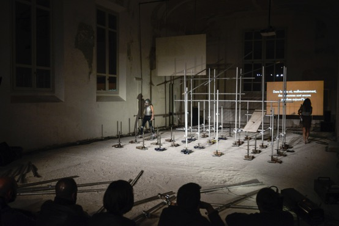

Que nous montre donc Claudia Triozzi dans Boomerang ou « le retour à soi » lorsqu’elle diffuse sur scène les interviews d’un archéologue tentant de décrire une scène érotique ou d’une actrice italienne des années 1950 nous avouant « Ho detto molti “no” (J’ai dit beaucoup de “non”) » par amour ? Quelle histoire nous est transmise ? Celle que ces personnes verbalisent ou celle qu’elles ne disent pas ? L’artiste nous raconte-t-elle une certaine histoire de la naissance du langage et de la sexualité ? Ou encore de la performance, elle qui déclare, en ouverture de cette nouvelle pièce, « donner son corps à l’art » comme d’autres le donneraient à la science ?
De ces conventions théâtrales, elle s’attache à souligner, depuis plus de trente ans, les artifices. Un retour à soi. Claudia Triozzi chante Caprice. « Une scène de dupe trop longtemps fantasmée, un caprice, une agonie… » Ainsi se réalise un retour d’expérience où la façon de s’engager surprend le visage comme un effet de boomerang.
« L’autobiographie mélange les genres, les voix, les naissances, les âges. La question révèle ses sens, et ouvre des possibles. Interpréter encore “là”, où l’on pose la limite de ce que l’on est, où la réponse ne pourra être une affirmation. Une scène s’ouvre à soi, inattendue. »
Claudia Triozzi

Conception, mise en scène et scénographie Claudia Triozzi
Interprété par Anne-Lise Le Gac & Claudia Triozzi
Musique composée par Hahn Rowe et Fernando Villanueva
Texte et voix Claudia Triozzi
Éclairage Yannick Fouassier
Régie plateau Sylvain Labrosse
Régie son Samuel Pajand
Production DAM-CESPI (Paris)
Coproduction Centre national de danse contemporaine (Angers) ; Festival NEXT (Eurometropolis Lille-Kortrijk-Tournai et Valenciennes) ; Centre chorégraphique national de Tours ; Abrons Arts Center (New York) ; FUSED – French US Exchange in Dance ; La Ménagerie de Verre (Paris) ; Théâtre des 13 Vents, CDN de Montpellier ; T2G – Théâtre de Gennevilliers, centre dramatique national de création contemporaine ; Festival d’Automne à Paris
Coréalisation T2G – Théâtre de Gennevilliers, centre dramatique national de création contemporaine ; Festival d’Automne à Paris
Accueil Studio Centre chorégraphique national de Montpellier Languedoc-Roussillon ; Centre chorégraphique national de Franche-Comté à Belfort
Avec la collaboration de l’Akademie Schloss Solitude in Stuttgart et Xing-Bologne
Avec le soutien de la Direction régionale des affaires culturelles d’Île-de-France – Ministère de la Culture et de la Communication.
Spectacle créé le 26 novembre 2013 à l’Espace Pasolini à Valenciennes.
2015 HTH, Centre Dramatique National de Montpellier – 4 et 5 mars
XING, Live arts week – 22 avril
2014 T2G, Festival d’Automne, Gennevilliers – 5, 6, 7, 8, 13, 14 et 15 novembre
Abrons Arts Center, Festival Danse, New York – 6, 7 et 8 mai
2013 Espace Pasolini, Festival NEXT, Valenciennes – 26 et 27 novembre